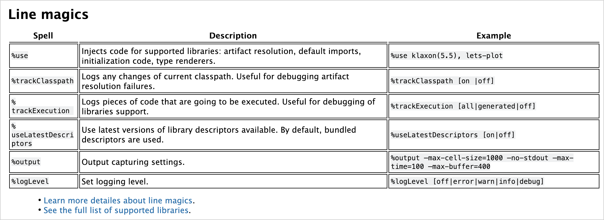
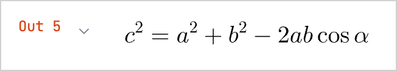

Kotlin Notebook
supports a variety of output types, including text, HTML, and images. With the help of external libraries, you can expand your output options and visualize your data with charts, spreadsheets, and more.
Each output is a JSON object that maps the
Jupiter MIME type
to some data. From this map, Kotlin Notebook selects the supported MIME type with the highest priority among other types and renders it like this:
Kotlin DataFrame tables
and
Kandy plots
use their own internal MIME types, which are backed by static HTML or images. This way, you can display them on GitHub.
You can set up the mapping manually, for example, to use Markdown as a cell output:
MimeTypedResult(
mapOf(
"text/plain" to "123",
"text/markdown" to "# HEADER",
//other mime:value pairs
)
)
To display any kind of output, use the
DISPLAY()
function. It also enables the combination of several outputs:
The simplest output type is plain text. It's used in printed statements, variable values, or any text-based output from your code:
val a1: Int = 1
val a2: Int = 2
var a3: Int? = a1 + a2
"My answer is $a3"
If a cell's result cannot be
rendered
and displayed as any of the output types, it will be printed as plain text using the
toString()
function.
If your code contains errors, Kotlin Notebook displays an error message and a traceback, providing insights for debugging.
Rich text
Choose cells of the Markdown type to use rich text. This way, you can format the content with Markdown and HTML markup, using lists, tables, font styles, code blocks, and more. HTML can contain CSS styles and JavaScript.
## Line magics
| Spell | Description | Example |
|------------------------------------|------------------------------------------------------------------------------------------------------------------|---------------------------------------------------------------------------------------|
| <code>%use</code> | Injects code for supported libraries: artifact resolution, default imports, initialization code, type renderers. | <code>%use klaxon(5.5), lets-plot</code> |
| <code>%trackClasspath</code> | Logs any changes of current classpath. Useful for debugging artifact resolution failures. | <code>%trackClasspath [on |off]</code> |
| <code>%trackExecution</code> | Logs pieces of code that are going to be executed. Useful for debugging of libraries support. | <code>%trackExecution [all|generated|off]</code> |
| <code>%useLatestDescriptors</code> | Use latest versions of library descriptors available. By default, bundled descriptors are used. | <code>%useLatestDescriptors [on|off]</code> |
| <code>%output</code> | Output capturing settings. | <code>%output --max-cell-size=1000 --no-stdout --max-time=100 --max-buffer=400</code> |
| <code>%logLevel</code> | Set logging level. | <code>%logLevel [off|error|warn|info|debug]</code> |
<ul><li><a href="https://github.com/Kotlin/kotlin-jupyter/blob/master/docs/magics.md">Learn more detailes about line magics</a>.</li>
<li><a href="https://github.com/Kotlin/kotlin-jupyter/blob/master/docs/magics.md">See the full list of supported libraries</a>.</li></ul>

HTML
Kotlin Notebook can render HTML directly, executing scripts or even embedding websites:
With Kotlin Notebook, you can display images from files, generated graphs, or any other visual media. Static images can be displayed in formats such as
.png
,
jpeg
, and
.svg
.
Buffered images
By default, you can use
BufferedImage
class to display images:
A disadvantage of images loaded from the network is that the image disappears if the link breaks or if you lose the network connection. To work around that, use embedded images, for example:
val kotlinMascot = Image("https://blog.jetbrains.com/wp-content/uploads/2023/04/DSGN-16174-Blog-post-banner-and-promo-materials-for-post-about-Kotlin-mascot_3.png", embed = true).withWidth(400)
kotlinMascot
Math formulas and equations
You can render mathematical formulas and equations using the LaTeX format, a typesetting system widely used in academia:
Add the
lib-ext
library that extends the functionality of the Jupyter kernel to your notebook:
%use lib-ext(0.11.0-398)
In the new cell, run your formula:
LATEX("c^2 = a^2 + b^2 - 2 a b \\cos\\alpha")

Data frames
With Kotlin Notebook, you can visualize structured data with data frames:
Use the same data frame and run the
plot()
function in the new cell:
val salesPlot = dfSales.groupBy { Product }.plot {
bars {
// Access the data frame's columns used for the X and Y axes
x(Month)
y(Sales)
// Access the data frame's column used for categories and sets colors for these categories
fillColor(Product) {
scale = categorical(
"Laptop" to Color.PURPLE,
"Smartphone" to Color.ORANGE,
"Tablet" to Color.GREEN
)
legend.name = "Product types"
}
}
// Customize the chart's appearance
layout.size = 1000 to 450
layout.title = "Yearly Gadget Sales Results"
}
salesPlot
You can also export your plot in the
.png
,
jpeg
,
.html
, or
.svg
format:
// Specify the output format for the plot file:
salesPlot.save("sales-chart.svg")